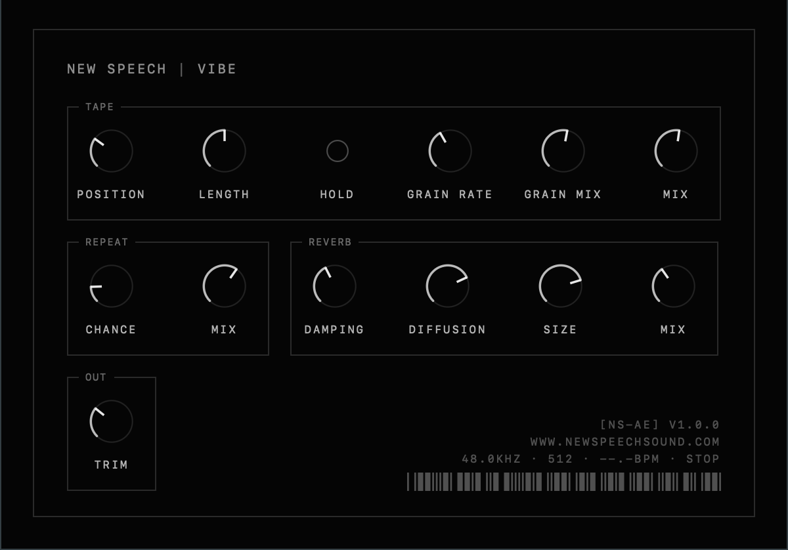
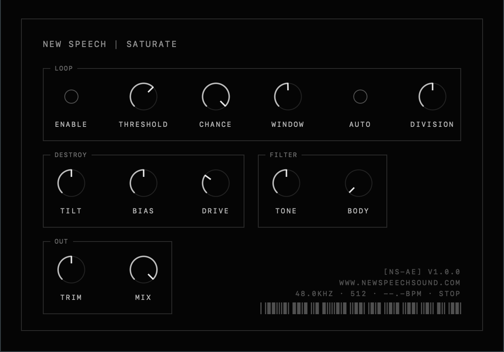
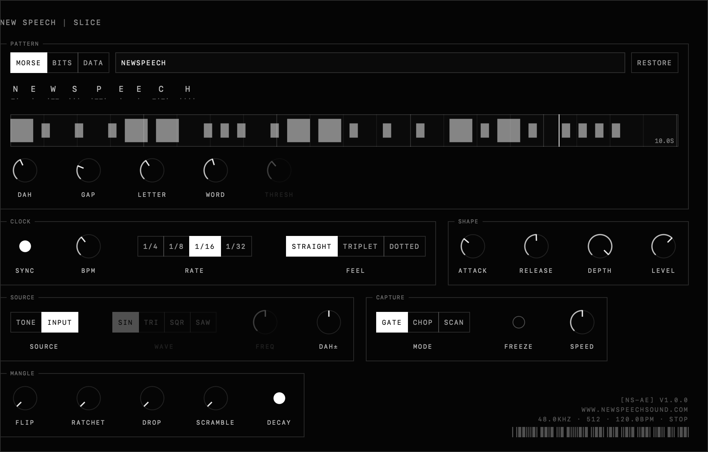
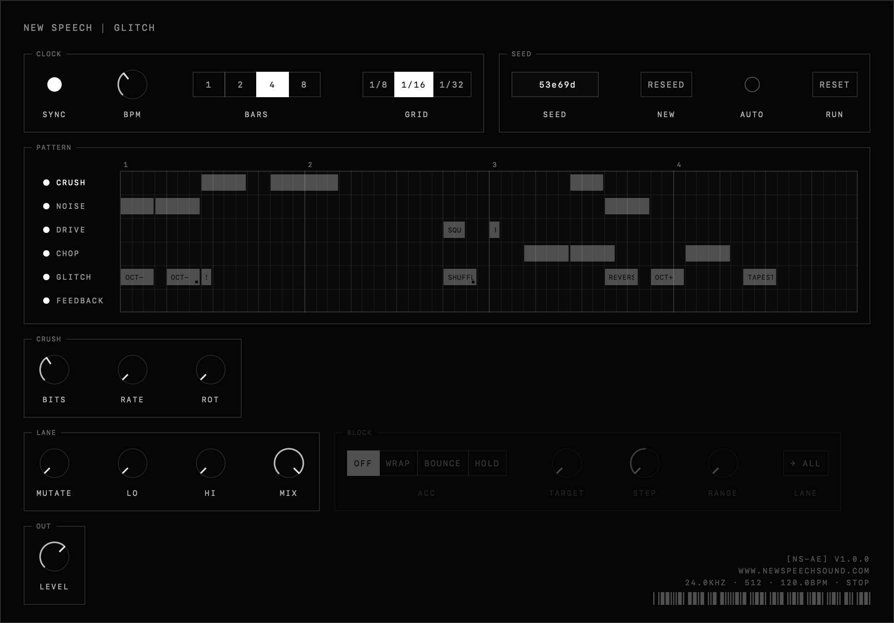

a step sequencer with a chord-relative harmonic engine. set a root and a scale, author chords by degree — the rest of the band harmonizes against whatever played last.
built to play itself, mostly: mutation dials on every row, five global macros, sixteen banks. arriving as a native macos app.
four free audio effects for macos — au + vst3, apple silicon + intel. free for everything, commercial or not.

vibe tape loop, tempo-synced repeat, big plate. put it on your master bus, probably.
saturate drive into a squelching filter, with a micro-loop that grabs slices on threshold.
slice hide messages in music — morse, bits, or any numbers you paste, as rhythm.
glitch audio destruction masquerading as a step sequencer.instruments that run in the browser — nothing to install. drop in a sound, wreck it, print a wav.